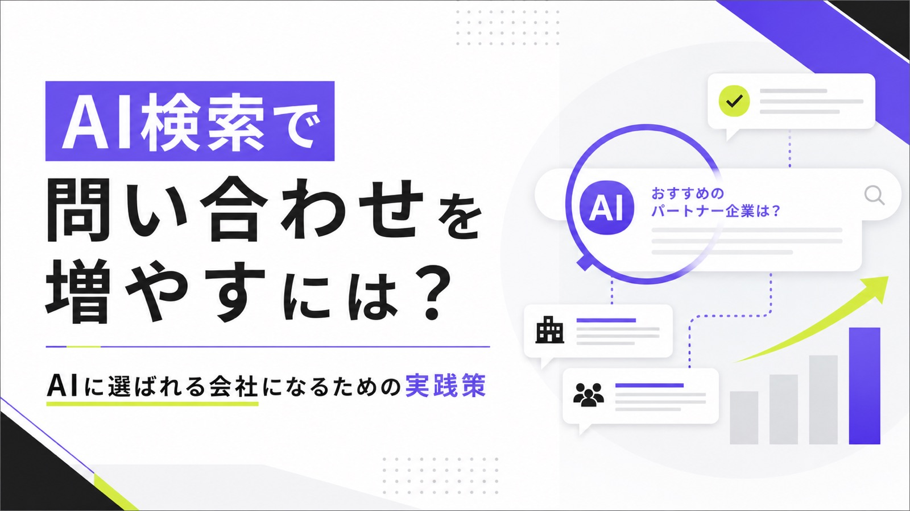
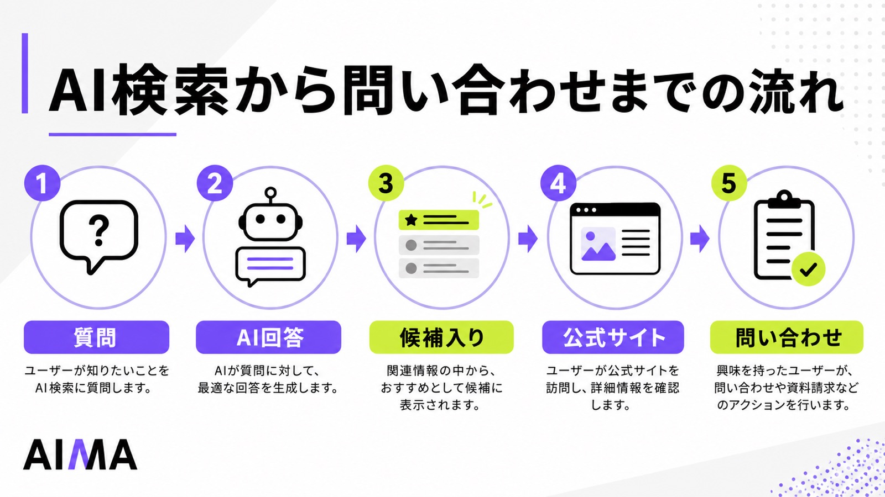
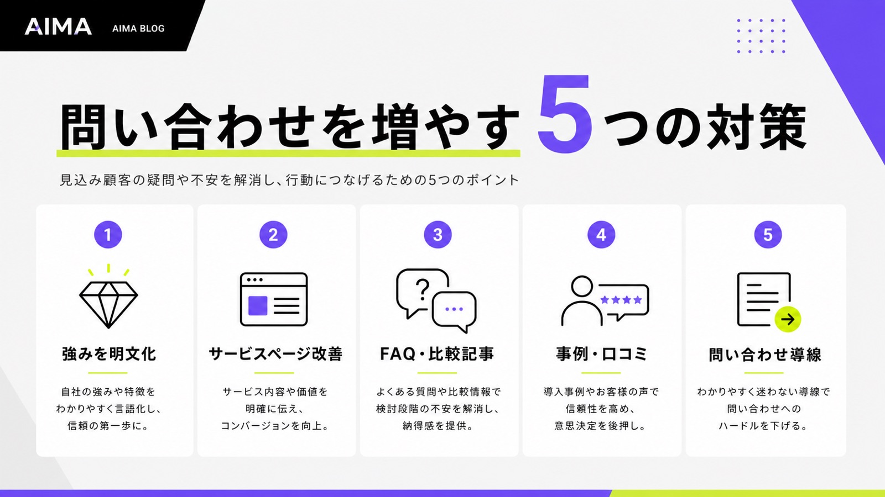
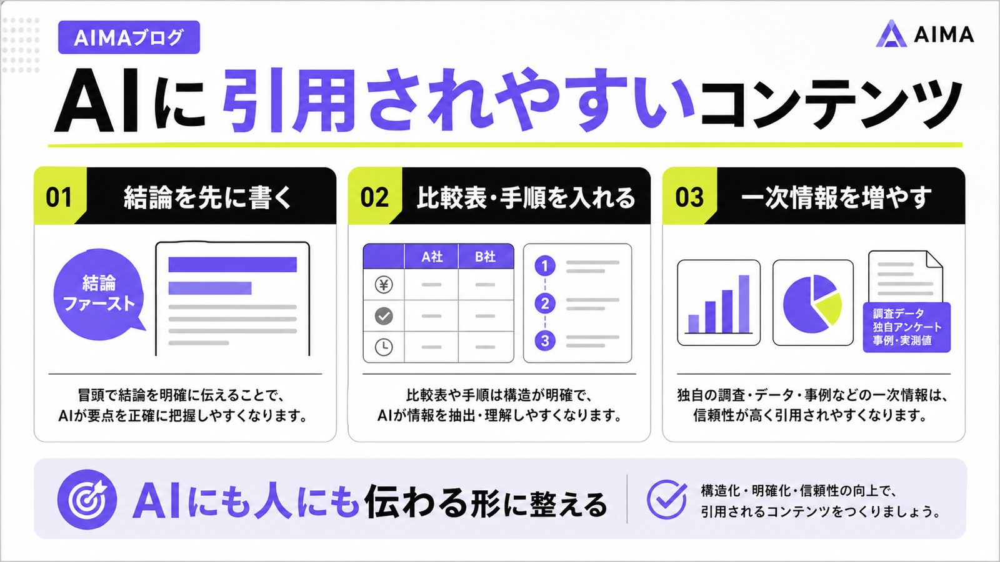
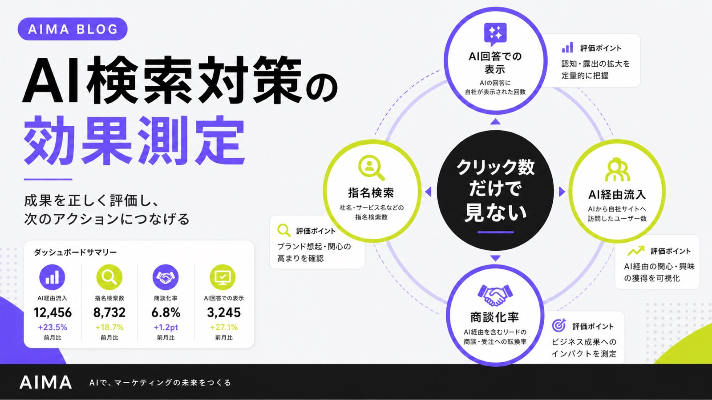

AI検索で問い合わせを増やすには？AIに選ばれる会社になるための実践策

AI検索で問い合わせを増やすには、AIに候補として選ばれる情報設計と、問い合わせしやすいサイト導線の両方が必要です。
この記事では、ChatGPT・Gemini・Perplexity・Google AI Overviewsなどで見込み客に見つけてもらい、公式サイトから問い合わせにつなげるための実践策を解説します。基本から整理したい方は、先にAI検索対策の全体像も確認できます。
SEO記事を増やすだけでは足りません。自社の強み、サービスページ、FAQ、事例、問い合わせ導線まで整えて、AIにも人にも「相談する理由」が伝わる状態を作りましょう。
目次

AI検索で問い合わせを増やすとは？
AI検索で問い合わせを増やすとは、ChatGPT、Gemini、Perplexity、Google AI Overviewsなどの回答内で自社が候補として扱われ、そこから公式サイトやサービスページに訪問したユーザーが問い合わせる状態を作ることです。
従来のSEOでは、検索結果で上位表示され、クリックを獲得し、サイト内で問い合わせにつなげる流れが中心でした。しかしAI検索では、ユーザーがサイトに訪問する前に、AIが候補や比較軸を提示します。つまり、問い合わせを増やすには「検索順位」だけでなく「AI回答内でどう扱われるか」まで考える必要があります。
従来のSEO集客との違い
従来のSEO集客は、検索結果で上位に表示されることが大きな入口でした。ユーザーは検索結果のタイトルや説明文を見てページを選び、記事やサービスページを読みながら問い合わせるかどうかを判断していました。つまり、クリックされた後のページ設計が重要でした。
一方、AI検索ではクリック前に比較検討が進みます。ユーザーが「おすすめの会社」「選び方」「費用相場」「失敗しない方法」などを聞くと、AIが複数の情報をまとめて回答します。その回答内に自社が含まれなければ、公式サイトを見られる前に候補から外れる可能性があります。
AI検索で増えるのはアクセス数より“比較済みの問い合わせ”
AI検索経由の流入は、従来の検索流入より数が少なく見えることがあります。AI回答内で疑問がある程度解消されるため、すべてのユーザーがサイトへ移動するわけではないからです。ただし、クリックしたユーザーはすでに課題や比較軸を理解している可能性があります。
SE Rankingの調査では、2025年時点のAIプラットフォーム経由トラフィックは全体の0.15%で、オーガニック検索の48.5%と比べると小さい一方、2024年から7倍に増えたとされています。AI検索はまだ主流の流入経路ではありませんが、見込み客との新しい接点として無視しにくい段階に入っています。
問い合わせ獲得に向いている業種
AI検索は、比較検討が必要な業種と相性が良いです。BtoBサービス、士業、コンサルティング、Web制作、採用支援、医療・美容、リフォーム、スクール、高単価商材などは、ユーザーが問い合わせ前に多くの情報を確認します。
特に「どこに相談すべきか」「何を基準に選ぶべきか」「自社に合う会社はどこか」といった質問が発生する領域では、AI回答内に出る意味が大きくなります。AIに候補として扱われることで、比較検討の初期段階から見込み客との接点を作れます。
なぜAI検索時代に問い合わせ数が変わるのか
AI検索の普及により、ユーザーの情報収集は「検索結果を順番に見る」形から、「AIに聞いて候補を絞る」形へ変わりつつあります。
この変化は、問い合わせ獲得にも影響します。AI回答内で候補に入る会社は、ユーザーの検討リストに早い段階で入れます。一方、AIに認識されていない会社は、検索順位が高くても比較対象に入れない場面が出てきます。
検索結果をクリックする前に意思決定が進む
AI検索では、ユーザーが複数の検索をしなくても、AIが情報をまとめて回答します。たとえば「大阪でAI検索対策に強い会社」「士業向けのLLMO対策会社」「BtoBの問い合わせを増やす方法」などと聞けば、候補や判断軸が一度に提示されます。
この時点で、自社の名前、サービス内容、強み、事例がAIに伝わっていなければ、ユーザーの候補に入りにくくなります。AI検索時代の問い合わせ獲得では、サイトに来た人を説得するだけでなく、サイトに来る前のAI回答内で選ばれる準備が必要です。
ゼロクリック化でSEO流入だけに依存しにくくなる
AI回答が検索結果上に表示されると、ユーザーはページをクリックしなくても概要を理解できます。とくに用語解説、簡単な比較、手順、相場感などは、AI回答だけで一定の疑問が解消されます。結果として、従来のSEO記事だけでは流入を取りにくい場面が増えます。
AIO exposure reduces daily traffic to English articles by approximately 15%.
AI Overviewの影響を調べた研究では、英語版Wikipedia記事の日次トラフィックが約15%減少したと推定されています。すべてのサイトで同じ影響が出るわけではありませんが、AI回答がユーザーのクリック行動を変える可能性は十分にあります。
問い合わせ前の情報収集がAI内で完結しやすくなる
問い合わせ前のユーザーは、料金、対応範囲、実績、評判、他社との違いを確認します。AI検索では、こうした情報が回答内でまとめられるため、ユーザーはサイトを細かく読み込む前に候補を絞り込めます。
つまり、AI検索対策では「会社名を出す」だけでは不十分です。どのような課題に強いのか、誰に向いているのか、どのような成果が期待できるのかまで、Web上に明確に出しておく必要があります。問い合わせにつながるのは、AIに名前が出た会社ではなく、選ぶ理由まで伝わる会社です。
AI検索で問い合わせが増える仕組み
AI検索から問い合わせが増える流れは、単純なアクセス増ではありません。AI回答内で候補として認識され、ユーザーが社名やサービス名を知り、公式サイトや事例ページで納得し、問い合わせに進む流れです。
この流れを作るには、AIに引用されやすいコンテンツと、問い合わせにつながるサイト導線の両方が必要です。記事だけを増やしても、受け皿となるサービスページが弱ければ問い合わせは増えません。

AI回答内で候補として名前が出る
AI検索で問い合わせを増やす最初の接点は、AI回答内で自社が候補として扱われることです。ユーザーが「おすすめの会社」「比較すべきサービス」「相談先」などを聞いたとき、自社名やサービス名が自然に出る状態を目指します。
そのためには、事業内容を抽象的なコピーだけで見せるのではなく、対象顧客、対応課題、得意領域、支援範囲、実績を明文化する必要があります。「マーケティング支援」だけでは弱く、「BtoB企業向けにAI検索経由の問い合わせ獲得を支援する」のように具体化することが重要です。
引用・参照リンクから公式サイトに来る
AI検索では、回答内に参考リンクや関連リンクが表示されることがあります。ユーザーはAIの要約を読んだうえで、詳しく確認したいページへ移動します。このとき、リンク先が問い合わせにつながるページになっているかが重要です。
チャットにはニュース記事やブログ記事などの「Sources（ソース）」へのリンクが含まれ、より詳しい情報が得られるようになりました。
ChatGPT searchのように、AI回答から参照元へ移動できる仕組みが広がると、AI回答内で見つかることと、クリック後のページで納得してもらうことの両方が重要になります。記事単体で終わらせず、サービスページ、事例、料金、FAQ、問い合わせフォームへ自然につなげる必要があります。
指名検索や再検索につながる
AI回答で社名やサービス名を見たユーザーは、その場で問い合わせるとは限りません。社名で再検索したり、評判や実績を調べたり、競合と比較したりします。AI検索からの問い合わせは、直接流入だけでなく、指名検索を経由して発生することもあります。
そのため、AI検索対策ではAI回答内の表示だけを追うべきではありません。社名検索で出るページ、Googleビジネスプロフィール、外部掲載、SNS、口コミ、導入事例まで含めて確認する必要があります。ユーザーが再検索したときに不安を感じる状態では、問い合わせにはつながりません。
AI検索で問い合わせを増やすために必要な5つの対策
AI検索で問い合わせを増やすには、AIに引用されるための情報設計と、ユーザーが問い合わせやすい導線設計を同時に進める必要があります。
ここでは、実務で優先すべき5つの対策を紹介します。特別なAI専用施策から始めるのではなく、まずは自社サイトの情報をAIにも人にも伝わる形に整えることが大切です。

1. 自社の強み・対象顧客・対応範囲を明文化する
AIに認識されるには、「何をしている会社か」がテキストで明確になっている必要があります。抽象的なコピーや雰囲気重視の表現だけでは、AIにもユーザーにも違いが伝わりません。対象業種、対応エリア、課題、提供サービス、費用感、支援範囲を具体的に書くことが重要です。
たとえば「集客支援を行っています」よりも、「BtoB企業向けに、AI検索・SEO・コンテンツ改善を通じて問い合わせ獲得を支援します」のほうが伝わります。AI検索では、サービス内容を言語化できている会社ほど、特定の質問に対する候補として扱われやすくなります。
2. サービスページをAIにも人にもわかりやすく作る
AI検索で問い合わせを増やすには、ブログ記事だけでなくサービスページの情報量が重要です。誰向けのサービスか、何を解決するのか、どこまで対応するのか、どのような成果が見込めるのかを明確にする必要があります。
There are no additional requirements to appear in AI Overviews or AI Mode.
AI OverviewsやAI Modeへの掲載は、特別なAI専用設定だけで決まるものではありません。検索に表示されるための基本的なSEO、ページ上のテキスト情報、内部リンク、構造化データと表示内容の一致などを整えることが土台になります。サービスページが薄いと、AIに引用されても問い合わせにはつながりません。
3. FAQ・比較・選び方コンテンツを増やす
AI検索は、ユーザーの質問に答える形で情報を扱います。そのため、FAQ、比較記事、選び方記事、チェックリスト形式のコンテンツと相性が良いです。「AI検索対策とSEO対策の違い」「LLMO対策会社の選び方」「問い合わせが増えない原因」などは、検討段階の疑問に直接答えられます。
ただし、一般論だけの記事では問い合わせにはつながりにくいです。比較軸、判断基準、向いている会社、失敗例、自社が支援できる範囲まで入れることで、読者が次の行動を取りやすくなります。AIに拾われるだけでなく、問い合わせ前の不安を減らす内容にすることが大切です。
4. 事例・実績・口コミを見える場所に出す
問い合わせ前のユーザーは、実績や信頼性を確認します。AI検索で社名を見たとしても、公式サイトに事例がない、外部評価が見えない、どの業種を支援したのか分からない状態では問い合わせに進みにくくなります。
事例ページでは、業種、課題、実施内容、成果、支援期間を具体的に書くべきです。数字が出せない場合でも、改善した業務、問い合わせの変化、作成したコンテンツ、導線改善の内容は書けます。AI検索では、一次情報を持つページほど参照価値が高くなります。
5. 問い合わせ導線を短くする
AI検索経由のユーザーは、すでにある程度の情報を得ています。にもかかわらず、問い合わせボタンが見つかりにくい、フォーム項目が多い、何を相談できるか分からない状態では離脱します。問い合わせまでの導線は、できるだけ短く、迷わない形にする必要があります。
無料相談、資料請求、診断、問い合わせ、LINE相談など、ユーザーの温度感に合わせた選択肢を用意すると行動しやすくなります。特にBtoBでは、いきなり問い合わせる前に「まず資料を見たい」「軽く相談したい」というニーズがあります。複数のCVポイントを設計することが重要です。
AIに引用されやすいコンテンツの作り方
AI検索で問い合わせを増やすには、AIが回答の材料として使いやすいコンテンツを作る必要があります。単に文字数を増やすのではなく、結論、比較、手順、判断基準、一次情報を分かりやすく配置することが重要です。
AIに引用されやすいコンテンツは、人間にとっても理解しやすいコンテンツです。曖昧な表現を減らし、読者が判断しやすい形で情報を出すことが、AI検索対策の土台になります。

結論を先に書く
AIに拾われやすいコンテンツは、結論が明確です。前置きが長く、最後まで読まないと答えが分からない記事は、AIにもユーザーにも扱いにくくなります。見出し直下で、何が言えるのか、どのような人に向いているのか、どの順番で読むべきかを示すことが大切です。
たとえば「AI検索で問い合わせを増やすには、AIに引用される情報設計と問い合わせ導線の改善が必要です」と先に書くと、読者は記事の方向性をすぐに理解できます。AI検索では、曖昧な導入よりも、明確な回答と根拠をセットで示す構成が強くなります。
比較表・チェックリスト・手順を入れる
AIは情報を比較、分類、要約して回答します。そのため、比較表、チェックリスト、手順、判断基準、メリット・デメリットの形式は相性が良いです。ユーザーにとっても、文章だけで長く説明されるより、違いや優先順位が見えるほうが判断しやすくなります。
問い合わせ獲得を狙うなら、単なる解説ではなく「選ぶ理由」まで見える構成にするべきです。たとえば、AI検索対策会社を選ぶ基準、問い合わせが増えないサイトのチェック項目、AIに引用されやすいページの特徴などを入れると、読者の検討が進みます。
一次情報を増やす
AI検索で選ばれるには、他社記事の焼き直しだけでは弱くなります。自社の支援事例、顧客からよくある質問、実際に改善した導線、独自のチェック項目、診断結果、失敗例など、一次情報を入れることで参照価値が高まります。
一次情報は、AIだけでなくユーザーにも効きます。検索上に似たような記事が増えるほど、「この会社だから言えること」が重要になります。問い合わせを増やしたいなら、一般論を並べるのではなく、自社の経験から言える判断基準をコンテンツに入れるべきです。
問い合わせにつながるサイト導線の作り方
AI検索に出ても、サイト側の受け皿が弱ければ問い合わせは増えません。AI検索対策は、コンテンツ制作だけでなく、サービスページ、事例、CTA、フォームまで含めた導線改善として考える必要があります。
特に重要なのは、ユーザーが「この会社に相談してよさそう」と思える情報を、問い合わせ前に出しておくことです。AI回答で興味を持ったユーザーを逃さないために、サイト全体で不安を減らす設計が必要です。
記事からサービスページへ自然につなげる
「AI検索とは」という解説記事だけで終わると、問い合わせにはつながりにくくなります。読者が課題を理解した後、次にどのページを見ればよいか分からなければ、そのまま離脱します。記事内からサービスページ、事例、料金、FAQへ自然につなげることが重要です。
ただし、無理に売り込む必要はありません。記事の流れに合わせて、「自社で対応するのが難しい場合」「問い合わせ獲得まで設計したい場合」などの文脈でサービスページへ誘導します。読者の悩みと次の行動がつながっていれば、CTAは押し売りではなく案内になります。
問い合わせ前の不安を減らす
問い合わせ前の不安は、費用、対応範囲、成果の見込み、契約期間、相談内容、担当者の専門性です。これらがページ上で分からないと、ユーザーは「問い合わせるほどではない」と判断して離脱します。AI検索経由のユーザーほど、他社と比較している前提で設計すべきです。
料金を明確に出せない場合でも、目安、プラン例、相談後の流れ、初回相談で確認する内容は出せます。すべてを隠して問い合わせさせるより、事前に判断材料を出したほうが、納得度の高い問い合わせにつながります。問い合わせ数だけでなく、商談の質も上がりやすくなります。
無料診断・資料請求・相談CTAを使い分ける
ユーザーの温度感は一律ではありません。すぐに相談したい人もいれば、まず情報収集したい人、自社の課題を診断したい人もいます。そのため、問い合わせフォームだけに依存すると、まだ検討初期のユーザーを取りこぼします。
AI検索からの流入を問い合わせにつなげるなら、無料診断、資料請求、相談予約、簡易チェックリストなどを使い分けるべきです。特にAI検索対策やWeb集客のように理解が必要な商材では、段階的なCV導線が有効です。ユーザーが今の温度感に合う行動を選べる状態にします。
AI検索からの問い合わせを増やすための効果測定
AI検索対策は、検索順位だけでは成果を判断できません。AI回答内での表示、引用、指名検索、AI経由流入、問い合わせ内容、商談化率まで見て評価する必要があります。
特に重要なのは、AI検索から直接来た流入だけを成果と見なさないことです。AI回答で自社を知ったユーザーが、後から指名検索や直接アクセスで訪問することもあります。
投資対効果まで整理したい場合は、AI検索のROIを測る考え方もあわせて確認すると、見るべき数字を分けやすくなります。

AI回答での自社名・サービス名の表示を確認する
まず、ChatGPT、Gemini、Perplexity、Google AI Overviewsなどで、狙いたい質問を定期的に確認します。「地域名＋サービス」「業種＋課題」「比較」「おすすめ」「選び方」など、自社が候補に入りたい質問を入力し、自社名やサービス名が出るかを見ます。
同時に、競合の表示状況も確認します。どの会社が出ているのか、どのページが参照されているのか、どのような理由で候補に入っているのかを見ることで、自社に足りない情報が分かります。AI回答の確認は、順位チェックではなく市場調査に近い作業です。
GA4でAI経由の流入を確認する
GA4では、ChatGPT、Perplexity、Geminiなどの参照元から流入があるかを確認します。AI検索経由のユーザーがどのページに来ているのか、滞在時間はどうか、問い合わせや資料請求につながっているかを見ることで、受け皿となるページの改善点が見えてきます。
ただし、AI検索からの影響は参照元だけでは測れません。AI回答で社名を知ったユーザーが、後から指名検索で訪問することもあります。そのため、AI経由流入、指名検索、直接流入、問い合わせ内容の変化をあわせて見る必要があります。
指名検索・問い合わせ内容・商談化率を見る
AI検索対策の成果は、問い合わせ数だけでなく問い合わせの質にも出ます。たとえば、問い合わせ時点で「AI検索対策について相談したい」「LLMOの記事を見た」「他社と比較している」といった具体的な相談が増えれば、検討度の高いユーザーに届いている可能性があります。
見るべき指標は、指名検索数、サービス名検索数、問い合わせ内容、商談化率、受注率、初回相談時の理解度です。AI検索経由の成果は、単発のクリックよりも、認知から比較、問い合わせ、商談までの流れで判断したほうが実態に近くなります。
AI検索対策で問い合わせが増えない失敗パターン
AI検索対策を始めても、すぐに問い合わせが増えるとは限りません。よくある原因は、AIに引用されることだけを目的にして、問い合わせまでの導線を設計していないことです。
AI検索対策は、記事制作、サービスページ改善、事例整備、フォーム改善まで含めて考える必要があります。ここでは、問い合わせにつながらない代表的な失敗パターンを解説します。
記事だけ増やしてサービスページが弱い
AI検索対策として記事を増やしても、問い合わせ先となるサービスページが弱ければCVしません。記事は認知や理解を作る役割を持ちますが、問い合わせ前の最終判断はサービスページ、事例、料金、FAQで行われます。
特にBtoBや高単価商材では、記事を読んだだけで問い合わせるユーザーは多くありません。読者は「どんな会社なのか」「自社に合うのか」「いくらかかるのか」「実績はあるのか」を確認します。記事とサービスページを分断せず、問い合わせまで一体で設計する必要があります。
自社の強みが抽象的すぎる
「伴走支援」「課題解決」「成果にコミット」などの表現だけでは、自社の強みは伝わりません。AIにもユーザーにも、どの業種に強いのか、どの課題を解決できるのか、どの工程まで対応するのかが分からないからです。
AI検索で候補に入りたいなら、強みを具体的に言語化する必要があります。「士業向けにAI検索での指名検索増加を支援」「BtoB企業のサービスページ改善から問い合わせ導線まで対応」など、対象と成果を明確にします。抽象的な強みは、比較検討の場面では選ぶ理由になりません。
外部情報と公式情報がズレている
会社情報、サービス名、住所、対応エリア、料金、実績、SNSのプロフィールが媒体ごとにズレていると、AIにもユーザーにも正しく伝わりません。古い情報が残っていると、ユーザーが再検索したときに不安を感じます。
AI検索対策では、公式サイトだけでなく外部情報も確認する必要があります。Googleビジネスプロフィール、SNS、外部掲載、プレスリリース、比較サイト、口コミサイトなどで表記をそろえることが大切です。情報が一貫している会社ほど、ユーザーは安心して問い合わせやすくなります。
AI検索で問い合わせを増やすために今すぐやるべきこと
AI検索対策は、いきなり大量の記事を作るより、問い合わせに近いページから改善するほうが成果につながりやすいです。
まずは、自社がAI検索でどう見られているかを確認し、サービスページ、事例、FAQ、問い合わせ導線を見直します。そのうえで、比較記事や選び方記事を追加していく流れが現実的です。
既存ページの情報不足を洗い出す
最初に見るべきページは、サービスページ、会社概要、料金、事例、FAQ、問い合わせページです。AI検索でユーザーが自社を知った後、最終的に確認するのはこれらのページです。ここに情報不足があると、せっかく認知されても問い合わせにつながりません。
確認すべき項目は、誰向けのサービスか、何を解決するのか、どこまで対応するのか、費用感はあるか、実績は見えるか、問い合わせ後の流れは分かるかです。まずは新規記事より、問い合わせに近いページの不足を埋めることから始めるべきです。
狙いたいAI検索クエリを決める
AI検索対策では、どの質問で自社を候補に入れたいのかを決める必要があります。「AI検索対策会社 おすすめ」「士業 LLMO対策」「BtoB 問い合わせ 増やす」「地域名＋サービス名」など、見込み客がAIに聞きそうな質問を洗い出します。
そのうえで、各質問に対して自社が選ばれる理由を用意します。サービスページ、比較記事、事例、FAQがその質問に答えられていなければ、AIにもユーザーにも選ばれにくくなります。狙うクエリを決めることで、作るべきコンテンツと改善すべきページが明確になります。
問い合わせにつながるページから優先的に改善する
AI検索対策というと、ブログ記事を増やすことから始めたくなります。しかし、問い合わせを増やす目的であれば、まず改善すべきなのは問い合わせに近いページです。サービスページ、事例、料金、FAQ、問い合わせフォームを整えるだけでも、CV率は変わります。
その後に、AI検索で拾われやすい比較記事、選び方記事、FAQ記事を増やします。認知を広げる記事と、問い合わせを受けるページを分けて考えるのではなく、一本の導線としてつなぐことが重要です。AI検索対策は、見つかるための施策ではなく、選ばれるための施策です。
まとめ：AI検索対策は“見つかる施策”ではなく“選ばれる施策”
AI検索で問い合わせを増やすには、AIに引用される情報設計と、ユーザーが問い合わせたくなる導線設計の両方が必要です。ChatGPT、Gemini、Perplexity、Google AI Overviewsなどの普及により、ユーザーは検索結果を順番に見る前に、AIから候補や比較軸を受け取るようになっています。
これからのWeb集客では、検索順位だけでなく、AI回答内でどう扱われるか、指名検索につながるか、公式サイトで納得してもらえるかまで設計する必要があります。
AI検索対策は、単なる流入施策ではありません。自社の強みを明文化し、サービスページを整え、FAQや比較コンテンツを増やし、事例と問い合わせ導線を改善することで、AI検索からの問い合わせ獲得につながります。
出典
参考：Google Search Central｜AI features and your website
参考：SE Ranking｜AI Traffic in 2025: Comparing ChatGPT, Perplexity & Other AI Platforms